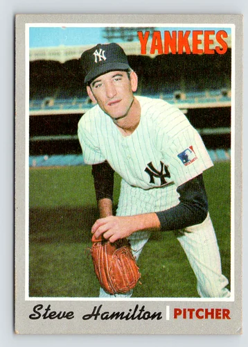
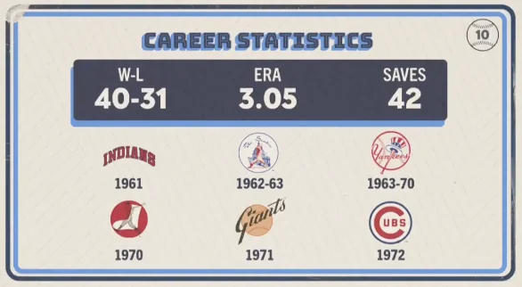

Steve Hamilton
Career Highlights & Facts
(Facts are AI-generated and may require verification)
- Played professional basketball for the Minneapolis Lakers before transitioning to a full-time Major League Baseball career.
- Served as a primary relief pitcher for the New York Yankees during the 1963 and 1964 World Series.
- Invented a signature slow-motion eephus pitch famously nicknamed the 'Folly Floater'.
Would you like to find out more about Steve Hamilton?
Career Totals
| WAR | W | L | ERA | G | GS | SV | IP | SO | WHIP |
|---|---|---|---|---|---|---|---|---|---|
| 11.1 | 40 | 31 | 3.05 | 421 | 17 | 42 | 663.0 | 531 | 1.161 |
Statistics via Baseball-Reference.com
The Original Clue
